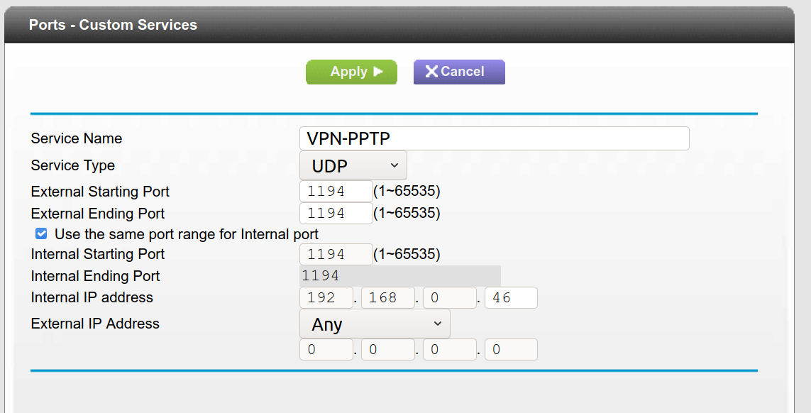
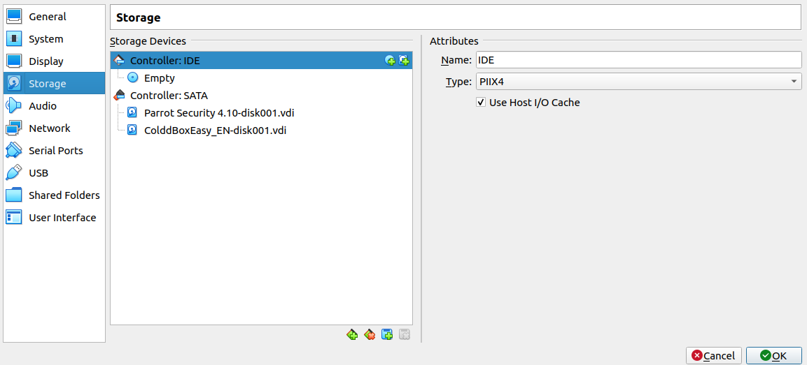

Goal: Run a simple OpenVPN server from your home in order for a select group of CTF players to participate in team practices. Players should receive an ovpn pack and connect to the VPN server where the target machine is located and accessible. We will achieve this by setting up a VPS using the OpenVPN Road Warrior installer, assigning VPN certificates to clients, and running an openvpn client from inside the target vulnerable machine.
I am writing this guide because finding any tutorials on how to configure an OpenVPN server for Vulnhub CTF practice has proven to be more difficult than the search for bigfoot. In order for future enthusiasists like myself to have an easier time getting a VPS running, here is my guide.
A decent Ubuntu machine for hosting the virtual private server
A vulnerable virtualbox ova downloaded from Vulnhub.com
A client machine
Setting up an OpenVPN Server
The Road Warrior OVPN Github repo streamlines the VPS setup process in just a few simple steps. It is efficient for getting small networks up and running quickly without the hassle of manually setting up each client. It automates a lot of the heavy lifting for you, right down to installing a new OpenVPN server or managing clients.
From your Ubuntu server, run the installer as root from the repo and follow the in-process instructions for setting up the OVPN instance. It will ask for your public IPv4 and IPv6 at some point. These are easily obtainable in the command line via wget -qO- http://ipecho.net/plain | xargs echo (IPv4) and curl icanhazip.com (IPv6).
When the installer has finished without issues, you can confirm your OVPN server is running by executing systemctl status openvpn-server@server.service.
If you want to add/delete users from the VPN or restart with a clean installation, run the same script again from the repo. It will automatically detect that a server has been setup already and will prompt you for additional actions to take.
Port Forwarding your VPN server to the Internet
Port forwarding to the Internet comes with risks, as you are literally opening up a port from your home network to be accessible from the public Internet. You can complete the following steps from any computer that is attached to the network. Here is how you can port forward your secure VPN server to be accessible to the Internet.
Login to your router's access panel (in my instance, it was located at the HTTP interface at 192.168.0.1)
Navigate to the port forwarding settings. This will be different on every router model, but mine was located at the Advanced Tab > Advanced Setup > Port Forwarding / Port Triggering
Select Port Forwarding under "Please select the service type"
Select Add Custom Service to begin adding a custom port forward rule.
Allow traffic to the UDP port 1194 where the server is located. Make changes corresponding to the screenshot below where Internal IP Address is equal to your OpenVPN server's LAN IP. Hit apply when you are finished.

At this point, your OpenVPN server should be accessible via your public IPv4 address.
Accessing the VPN From a Client Machine
If you recall from earlier, the setup process with the road warrior script asked for the name of your first client and generated an OVPN configuration pack which should be stored in your server's root user directory. In my case, jvarga11 is the first client's name and was stored as /root/jvarga11.ovpn. Transfer this pack to the client machine using scp, then run it as sudo openvpn jvarga11.ovpn. If everything was done correctly, you should see the message "Initialization Sequence Completed" on the client machine and a new tun0 interface should be added.
Setting up a Vulnerable VM on the OpenVPN Server
Luckily, there is a way for you to open up the vulnerable VM's file system without having to go through all of the steps to exploit it in the first place. First, import the machine and set the network adapter to NAT. Attach the vulnerable machine's VDI file to a VM you have access to in Virtualbox like so. In my case, I attached it alongside a Parrot Security VM.

Start up Parrot, then use the file manager to mount the vulnerable machine's hard drive. Open a terminal as root, then navigate to the vulnerable machine's file system and create a backdoor in the password file so you can log in as root without having to exploit it. As root, you can install an openvpn client using apt and connect the machine to the network.
Managing VPN Users
Run the bash script that you downloaded in "Setting up" section. This time, it will give you some options that allow you to revoke client certificates, add new clients, and delete the server files.
And that's all! At this point, you have an OpenVPN server running that is available from the public Internet where you can then issue certificates, run vulnerable machines, and host CTF practices with your team.